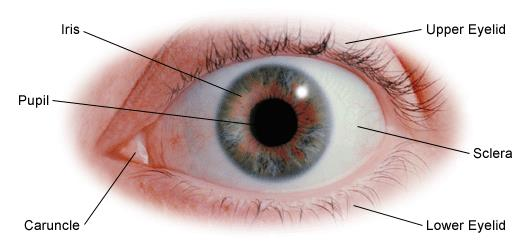

VISION
How does your Eye work?
Our vision allows us to be aware of our surroundings. Eighty per cent of everything we learn is through our sight.
Your eye works in a similar way to a camera. When you look at an object, light reflected from the object enters the eyes through the pupil and is focused through the optical components within the eye.
The front of the eye is made of the cornea, iris, pupil and lens, and focuses the image onto the retina. The retina is the light sensitive membrane that covers the back of the eye. This membrane consists of millions of nerve cells which gather together behind the eye to form a large nerve called the optic nerve.
When the light enters the eye, it is focused to a pinpoint on the macula, a small area in the centre of the retina at the back of the eye. The macula is responsible for central detailed vision, allowing you to see fine detail and colour, read and recognise faces.
When light stimulates the nerve cells in the retina, messages are sent along the optic nerve to the brain. The optic nerves from the two eyes join inside the brain. The brain uses information from each optic nerve to combine the vision from the two eyes allowing you to see one image.
![Iris - thin circular structure at the front of the eye. The iris is the coloured part of the eye (blue, brown or green). Pupil - the opening in the iris - the circular black centre. Lens - behind the iris - a transparent, biconvex structure. Posterior chamber – the back part of the eye’s interior - filled with watery fluid known as aqueous humour. Ciliary body and muscle – part of the eye that produces aqueous humour. Posterior chamber – back part of the eye’s interior, the aqueous passes into the posterior chamber and then flows forward through the pupil into the anterior chamber of the eye. Suspensory ligament of lens - a series of fibres that connect the ciliary body of the eye with the lens, holding it in place.](Eye8.jpg "Illustration of the structures of the eye labelled") Image of eye anatomy side view. At the front of the eye is the cornea and anterior chamber underneath it. Below that is the iris, the coloured ring which surrounds the pupil, which is the opening in the centre. The lens is underneath the iris and held in place by the suspensory ligament at the top and the posterior chamber and ciliary body and muscle below the eye. The retina forms the circular shape at the back of the eye surrounded by a layer called the choroid and then another layer called the sclera. Within the retina is the macula the size of a pinpoint, vitreous body and blood vessels. The optic nerve protrudes from the back of the eyeball and consist of blood vessels.
Image of eye anatomy side view. At the front of the eye is the cornea and anterior chamber underneath it. Below that is the iris, the coloured ring which surrounds the pupil, which is the opening in the centre. The lens is underneath the iris and held in place by the suspensory ligament at the top and the posterior chamber and ciliary body and muscle below the eye. The retina forms the circular shape at the back of the eye surrounded by a layer called the choroid and then another layer called the sclera. Within the retina is the macula the size of a pinpoint, vitreous body and blood vessels. The optic nerve protrudes from the back of the eyeball and consist of blood vessels.
Save Your Sight – Get Tested
PREVIOUS NEXT